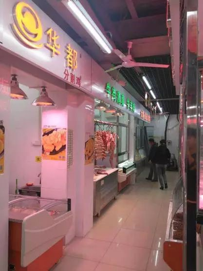

您好！商业便民网点上线，您要的一站式服务到了!
来源：北京东城
2017年1至11月，东城区提前完成商业便民网点的年度任务。新建和规范提升便民网点103家。其中，新建蔬菜零售、固定早餐门店、超市便利店等各类生活性服务业网点83个，规范提升20个。
身边的商业便民网点越来越多
买菜也越来越方便
这其中
既有利用腾退空间
新建的商业便民网点
也有转型升级的超市和便民菜站
让居住在东城的老百姓
出门就能满足各种生活所需
享受更加优质的服务
我们一直在路上

东花市北里菜市场变身甘其食超市
东花市北里菜市场经过整治后
转型升级为甘其食超市社区便民综合体
总经营面积1400平方米
以生鲜超市为主体，搭载多种便民服务
服务半径约2公里，辐射周边2-3万人
原东花市北里菜市场转型升级为甘其食超市
菜价比周边便宜近30%
超市不少蔬菜都是产地直供
物美价廉还新鲜
还设有张家口农特产品基地直供区
提供十类百余种产品
受到了居民的广泛好评
超市经理：
我们已经与河北、内蒙、江浙、湖北、云南等200多家专业合作社、蔬菜直供基地合作，建设了全流程追溯和统一物流配送体系，从而降低了运输成本，保障蔬菜低价平稳供应，蔬菜、水果价格平均低于周边市场。
经营管理六统一
社区居民：
原来的北里菜市场环境嘈杂不说，还混杂着各种味道。卖鱼的师傅总是不管自己摊位流出来的污水，过道特别滑。不少个体户还在里面做饭，不卫生也不安全。
升级改造为超市后
原有的脏乱嘈杂不复存在
新综合体在经营管理上做到
“形象、管理、配送、价格、
运营、信息”六统一
如今呈现给周边居民的
是一个明亮舒心的购物环境
改造后购物环境整洁明亮
保留需求旺盛的服务
甘其食超市便民综合体
不仅有蔬菜零售、餐饮、便利店
还保留了居民需求旺盛的多种服务
超市的便民区域里
以居民需求为导向
提供日常生活所需的
末端配送、线上订餐等多种便民服务
做到一站式全覆盖
沙滩后街新建便民服务综合体
景山街道沙滩后街甲2号
利用约700平方米的腾退房屋
建起了华联生活超市
居民在家门口立享一站式便民服务
对违建部分进行拆除
建成华联生活超市
提供多种服务满足居民所需
经营超市、主食厨房、生鲜水产等多种类别
提供修配钥匙、家政服务、修鞋等便民服务
物美价廉吸引周边居民光顾
商品种类贴近百姓日常所需
持续优化服务吸引客源
超市不断丰富服务内容
积极推进便民早餐工程
商品增加至16大类3000余种
增设结账通道
改善顾客购物体验
提高超市服务水平
按周围群众的需求调整经营品类
增设结算通道
增加服务种类
东四六条引入“悠惠万家”便利店
利用腾退空间引入连锁品牌
东四街道集中整顿
私搭违建、占道经营等违规违法行为
考虑周边居民所需
利用腾退空间
引入“悠惠万家”连锁品牌
胡同整治前占道经营、“开墙打洞”等问题突出
品牌入驻百姓点赞
新建的“悠惠万家”超市提供了
蔬果菜站、主食厨房等
与居民生活息息相关的各种服务
胡同里的居民们出门几分钟
就能买到各种日常所需
便民菜站、主食厨房一应俱全
生活真方便 百姓乐开颜
东直门老商场变身时髦便民综合体
为解决附近居民买菜问题
东直门外小街的胡家园商场
变身一座便民服务综合体亮相
菜果肉蛋、副食粮油、水产百货等商品
家政维修、理发、服装加工等服务
一应俱全
上世纪80年代的副食店退出历史舞台
东直门首家便民综合体“悠惠万家”胡家园店亮相
东直门街道另一家便民服务综合体
预计年底将在东四十条桥附近开业
明年，东直门街道的每个社区
都将配齐两个社区便民蔬菜网点
“小簋街”综合整治后新增便民菜店
“小簋街”北新桥三条完成整治后
以精品胡同的面貌重新亮相
这里新增了“悠惠万家”便民菜店
同时正在改造升级社区商业便民服务综合体
让胡同居民的生活质量更有品质
东单菜市场打造便民新模式
东城区以规范化社区菜市场
大中型超市升级改造为抓手
打造生活服务业态和功能资源
依托“北京老字号”东单菜市场
推出“悠惠生活馆”社区O2O品牌
打造新型商业便民服务综合体模式
破解民生服务“最后一公里”问题
东单菜市场悠惠生活馆光明楼店
集合了家政服务、养生课堂、便民早餐
足疗保健、理发磨刀、休闲娱乐等
多项便民为老服务项目
打造一站式生活服务驿站

提供各类一站式便民服务
居民可通过“悠惠生活”APP
微信商城进行手机下单
选择周边两小时配送
或门店自提等多种便民服务模式
产品种类丰富
提供线上服务
身边有这么多便民网点
是不是很舒心呢？
居民们的和谐美好生活
是我们始终如一的努力方向
今后，我们将再接再厉
不忘初心，牢记使命
不为建设和谐宜居的美丽东城
砥砺前行！